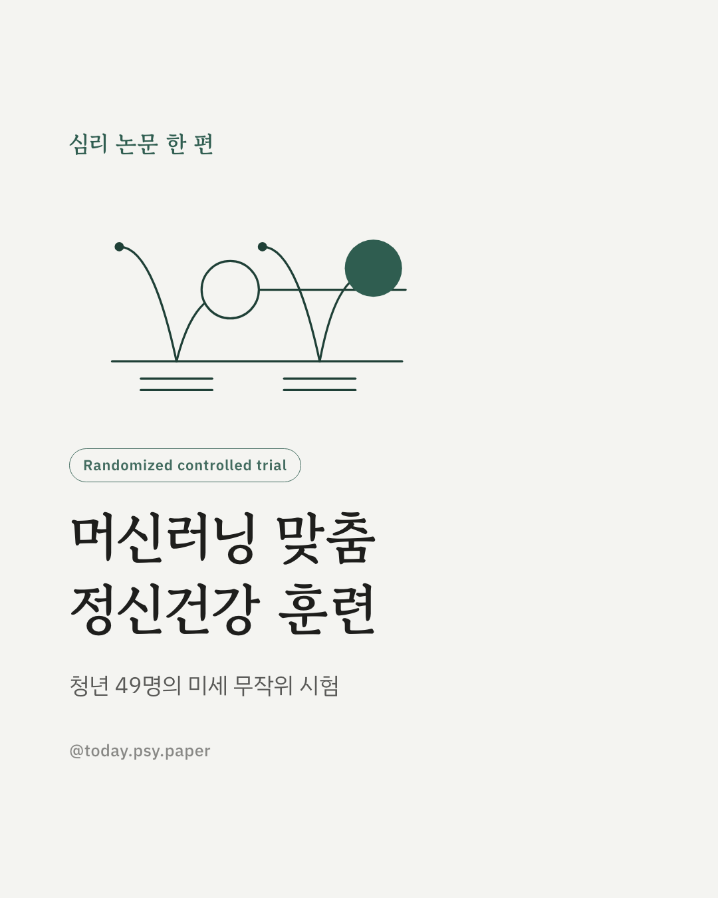
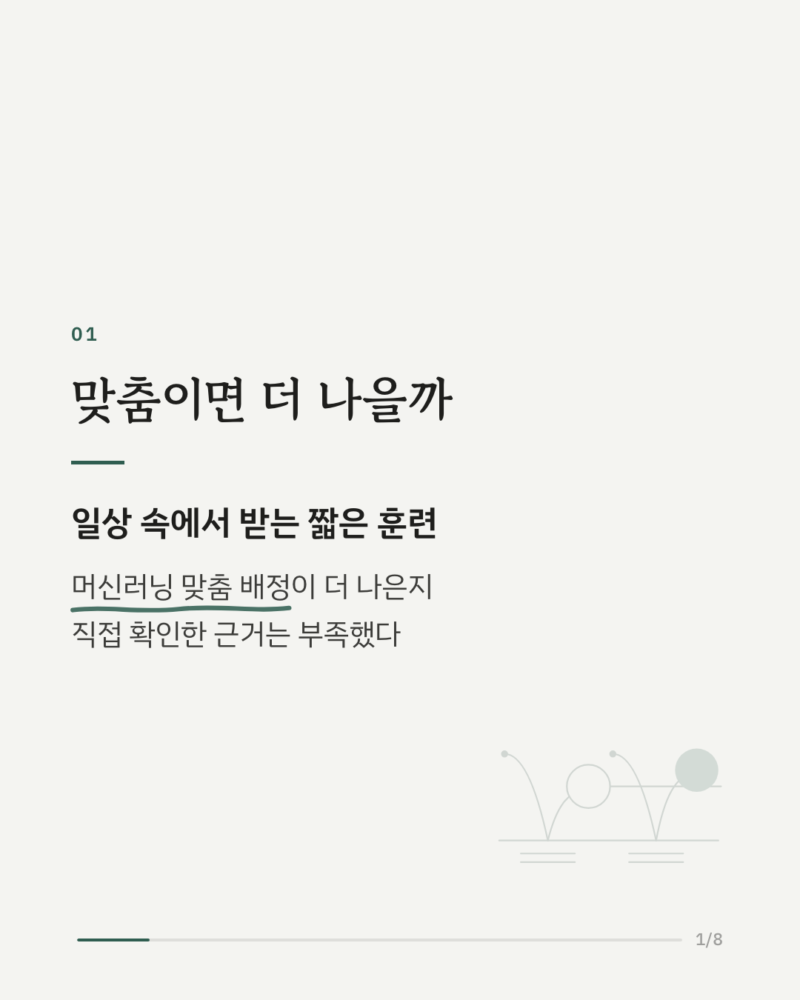
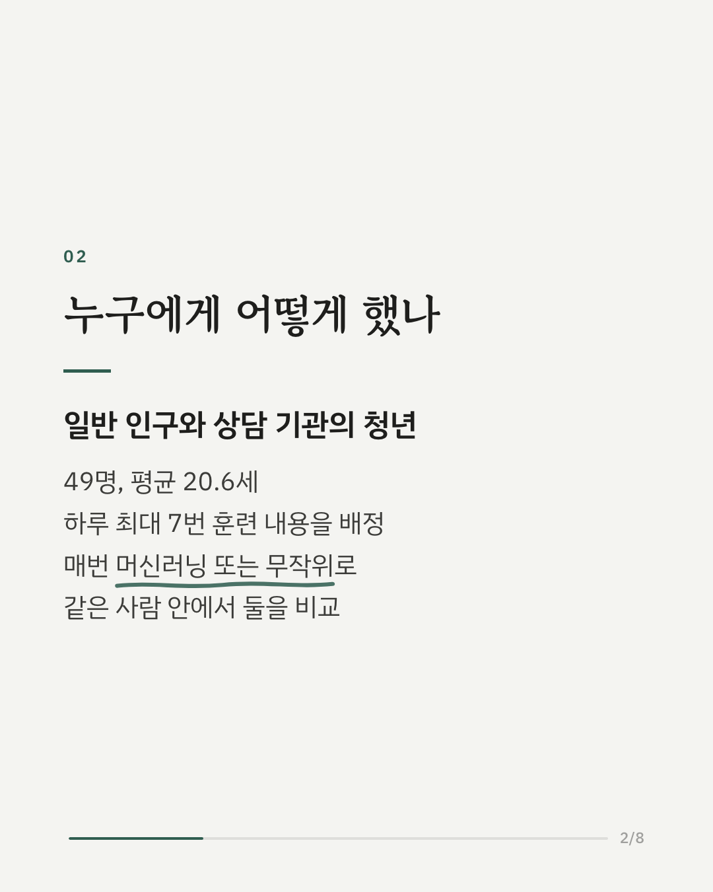
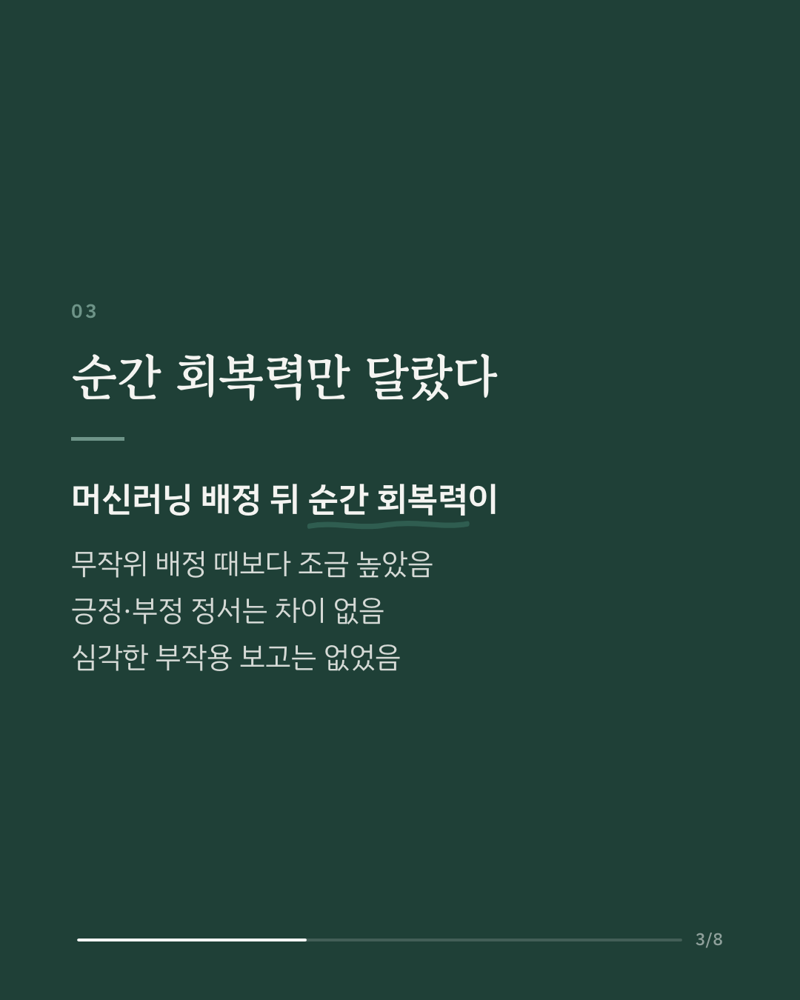
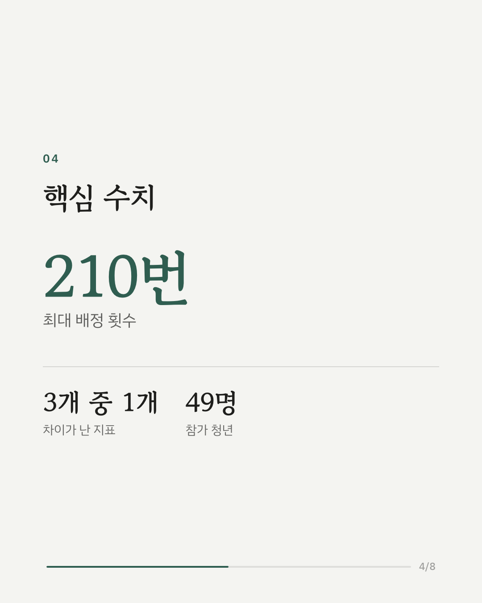
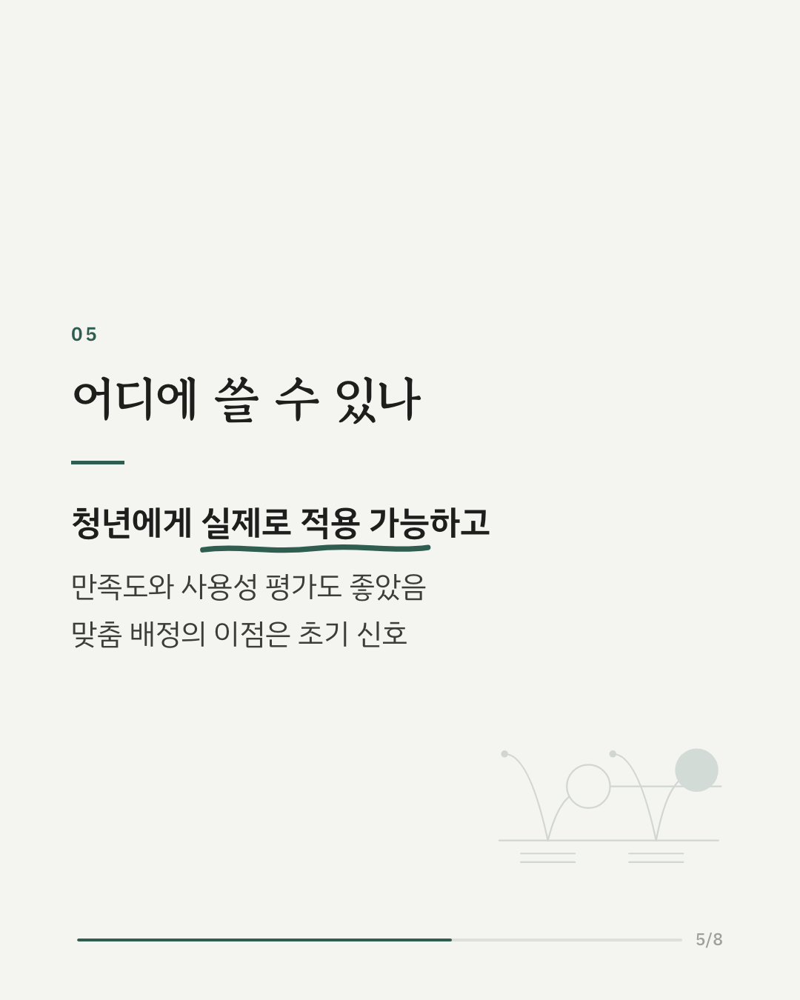
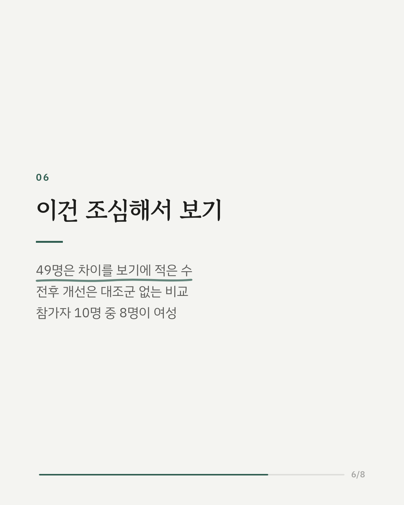
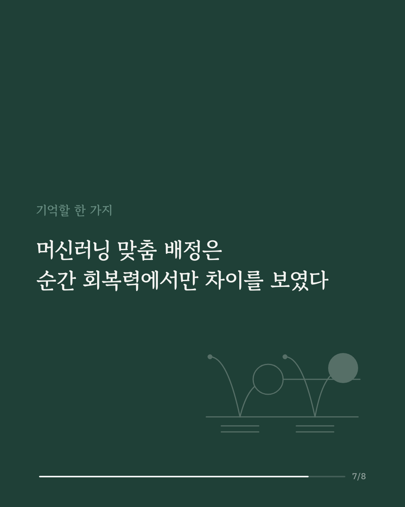
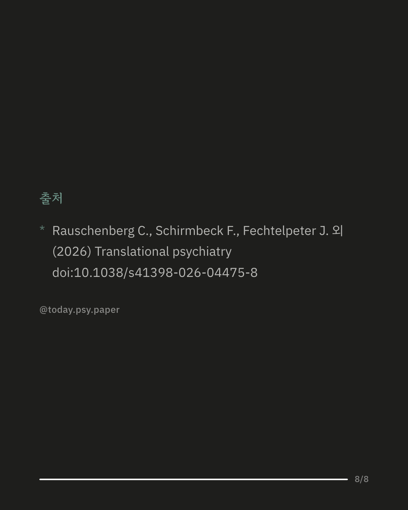

청년 정신건강을 돕기 위해 일상 속에서 짧은 훈련을 보내 주는 방식이 늘고 있습니다. 이때 훈련 내용을 머신러닝으로 사람에 맞춰 고르면 회복력이나 기분이 더 좋아지는지는 확인된 적이 거의 없었습니다. 연구진은 일반 인구와 심리 상담 기관에서 모집한 청년 49명(평균 20.6세)에게 하루 최대 7번, 모두 합쳐 최대 210번 훈련 내용을 배정했습니다. 배정할 때마다 머신러닝 맞춤 배정과 무작위 배정 중 하나가 절반 확률로 정해졌고, 같은 사람 안에서 두 방식을 비교했습니다. 머신러닝 맞춤 배정 뒤에는 그 순간의 회복력이 무작위 배정 때보다 조금 높았습니다. 차이의 크기는 작은 편이었고, 긍정 정서와 부정 정서에서는 차이가 확인되지 않았습니다. 심각한 부작용은 보고되지 않았으며 만족도와 사용성 평가도 좋았습니다. 훈련 전과 후를 비교하면 심리적 고통은 작은 폭으로 줄었고, 회복력과 적응적 정서 조절은 중간 정도로 나아졌습니다. 다만 이 전후 비교는 대조군이 없어서 훈련의 효과라고 말하기 어렵습니다. 참가자가 49명으로 적고 78%가 여성이었다는 점도 함께 봐야 합니다. 연구진도 더 큰 규모의 시험이 필요하다고 밝혔습니다. 출처: Translational Psychiatry (2026), 'A machine learning-based ecological momentary intervention for mental health promotion in youth: a micro-randomized trial' DOI: 10.1038/s41398-026-04475-8 #임상심리 #정신건강정보 #심리학연구 #논문리뷰 #회복탄력성 #청년정신건강 #디지털정신건강 #머신러닝
python3 publish.py 42800797